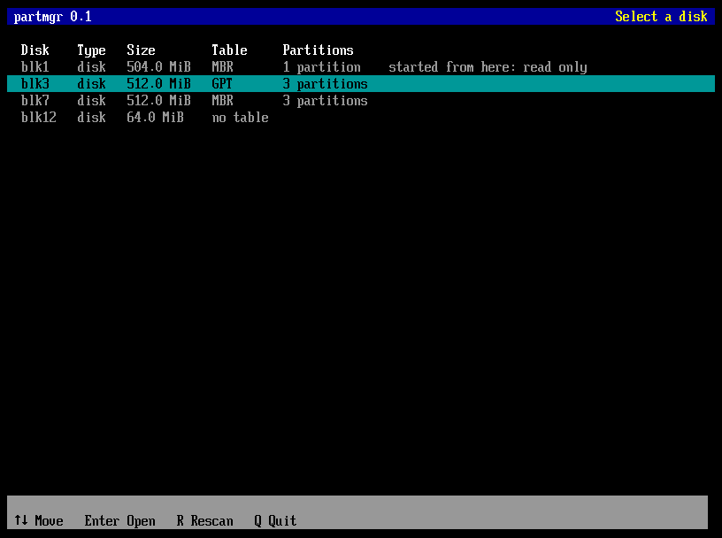
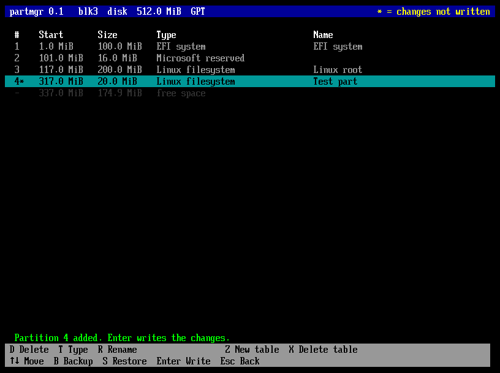
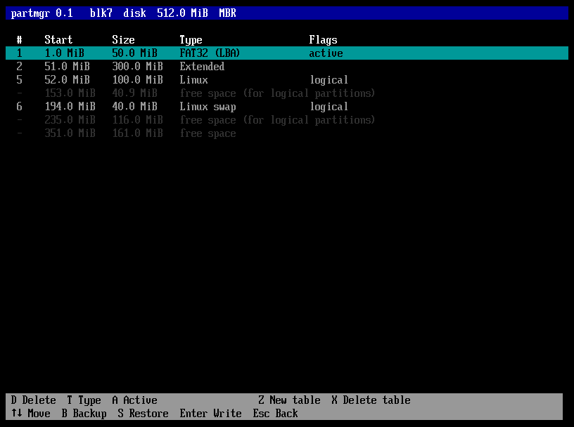
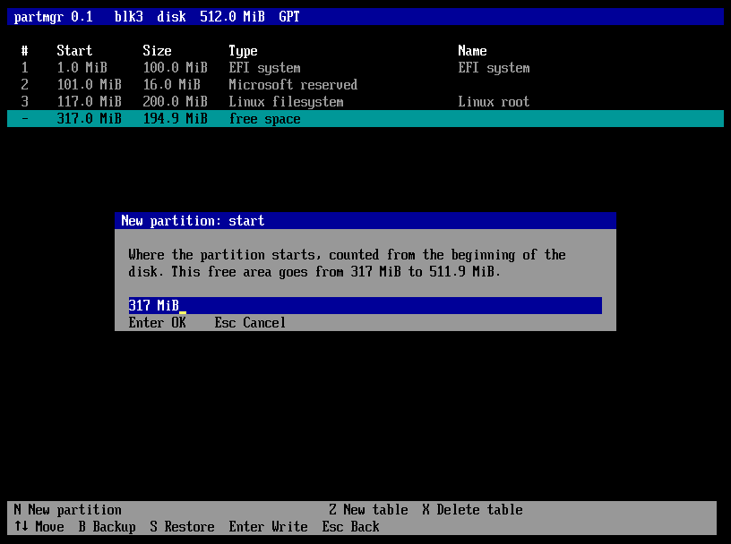
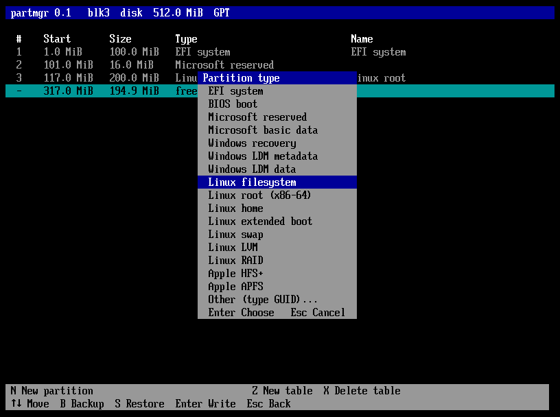
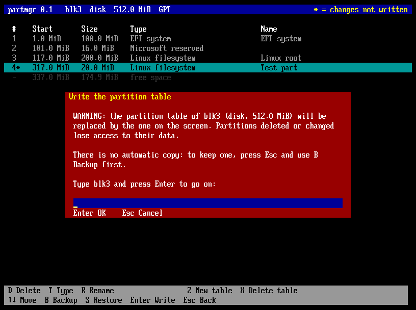
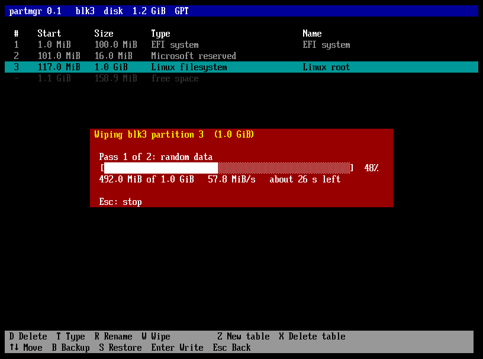

partmgr — the partition manager
A full-screen program for UEFI firmware that shows, creates and changes GPT and MBR partition tables. Every change is shown on the screen first and written only when you ask for it, after a clear warning.
Contents
The alphabetical index at the end lists keys, messages and topics. Press / to search.
Introduction
What partmgr is, what it does and does not do, and how it fits next to NESH.
What partmgr is
A disk is divided into partitions, and a small table at its beginning — the partition table — says where each partition starts, how big it is and what it is for. Preparing a disk (for a new system, a recovery stick, a second drive) starts with that table. Usually it means booting a whole Linux or Windows environment just to run a partitioning tool.
partmgr does it directly in the UEFI firmware, before any operating system. It is a single file,
partmgr.efi, that you start from NESH, from another UEFI shell or from the
firmware boot menu. It offers:
GPT and MBR
Both kinds of table, read and written in full: MBR with primary, extended and logical partitions.
See first, write later
Changes are made on the screen; the disk changes only when you choose Write and type its name.
Backup and restore
The partition table of a disk saved to a file, and written back exactly as it was.
Wipe
A partition overwritten twice, random data then zeros, with a progress bar and the time left.
Safe by design
The disk partmgr was started from is never written; damaged tables are recognised and explained.
Readable
Types chosen from a list, sizes such as 512M or rest, no codes to remember.
Part of the NESH project
Same release, same disk names as NESH's map (blk3 is the same disk in both).
What partmgr does not do
partmgr works on partition tables. It does not format partitions (the firmware or the operating system does that), does not resize or move them, and does not install boot code. Deleting a partition removes it from the table; its data stays on the disk until something overwrites it.
The one thing partmgr writes inside a partition is a wipe, and only when asked: it overwrites the whole partition so that its data is gone.
partmgr and NESH
partmgr is a separate program, not a NESH command: nesh.efi stays one file with the shell in it, and
partmgr is a second file of the same project, built from the same sources and published in the same release. They
share the way disks are numbered: the blkN names of partmgr are the ones NESH's map shows.
The reasons are recorded as decision D21 in the
design decisions.
Conventions used in this manual
| You see | It means |
|---|---|
| N, Enter, Esc | Keys to press. Letters work in upper or lower case. |
512M | Something you type. |
blk3 | A disk, as partmgr and NESH name it. |
| Delete / wipe | To delete a partition removes it from the table; to wipe it destroys its contents. The manual never uses one word for the other. |
Getting started
How to get partmgr.efi, where to put it and how to start it.
Requirements
- A computer or virtual machine with UEFI firmware on x86-64.
- A text console of at least 80 columns and 25 rows (every firmware has one).
- A FAT volume the firmware can read, for
partmgr.efiitself — and, for backups, a FAT volume that can be written.
Getting partmgr.efi
partmgr is built together with NESH:
$ make $ ls -l build/partmgr.efi
make produces build/partmgr.efi next to build/nesh.efi. partmgr is new: the
downloads of NESH 0.2.0 do not include it yet; the next release will.
Putting it on a stick
Copy partmgr.efi to the FAT volume, next to nesh.efi or in a tools folder, for example
\EFI\tools\partmgr.efi. To have it as the only program of a stick, copy it as
\EFI\BOOT\BOOTX64.EFI: the firmware boot menu then starts partmgr directly.
Starting partmgr
From the NESH prompt, type its name with the volume and folder, or just partmgr when its folder is in
NESH's path:
fs0:\> fs0:\partmgr.efi
A boot entry works too: bootmgr add fs0:\EFI\tools\partmgr.efi "partmgr" in NESH puts it in the firmware
boot menu. When you leave partmgr (Q on the list of disks) the screen is cleared and you are back where you
started it from.
Secure Boot
With Secure Boot active the firmware starts only signed programs. partmgr.efi is a file of its own, so it
needs its own signature, made in the same way as for nesh.efi (see Signing nesh.efi in the
NESH manual):
$ sbsign --key db.key --cert db.crt --output partmgr-signed.efi build/partmgr.efi
Secure Boot does not limit what partmgr may do: writing a partition table is a disk write, like writing a file, and does not get around the protection of the firmware.
The screens
partmgr has two screens: the list of disks, and the screen of one disk.
The list of disks

Every whole disk with a medium in it has a row: its name, the kind of connection (NVMe, SATA, USB, SCSI, SD… or just disk when the firmware does not say), its size, the kind of partition table and the number of partitions. Empty drives and single partitions are not listed.
- Names. Disks are called
blkNwith the numbers of NESH'smap: the numbers count every block device, partitions included, which is why they are not consecutive. - started from here: read only marks the disk partmgr was loaded from. It can be looked at and backed up, never changed: changing the table under the running program could destroy it.
- write-protected marks a medium the firmware reports as read-only.
- no table: the disk has no partition table — new, erased, or with a file system written directly on the whole disk.
| Key | Does |
|---|---|
| ↑ ↓ Home End | Move. |
| Enter | Opens the disk. |
| R | Reads the disks again (after plugging in a stick). |
| Q or Esc | Leaves partmgr. |
The screen of a disk

The title bar names the disk, its kind, its size and its table. Below it are the partitions and the free areas, in the order they have on the disk:
| Column | Content |
|---|---|
| # | The partition number: the entry of a GPT, or 1–4 (primary and extended) and 5 onward (logical) on an MBR.
- for a free area. A star (4*) marks what changed since the table was read. |
| Start | Where the partition starts, from the beginning of the disk. |
| Size | Its size. Sizes use binary units: 1 MiB = 1024 KiB, 1 GiB = 1024 MiB. |
| Type | What the partition is for (EFI system, Linux filesystem, NTFS/exFAT…), or the raw type when partmgr has no name for it. |
| Flags | MBR only: active (the partition old BIOS systems start) or logical. |
| Name | GPT only: the name stored with the partition. |
Free areas appear in grey: free space, or on an MBR disk free space (for logical partitions) when the area is inside the extended partition. Only areas of at least 1 MiB are shown, starting on a 1 MiB boundary. Changed rows are yellow, and the title says * = changes not written as long as there is something to write.
Under the list, Note: lines explain anything unusual partmgr found in the table (see What the notes mean), and a green or red line reports the result of the last action. The two bars at the bottom show the keys; the first one changes with the selected row: N on free space, D T W and R or A on a partition.

Partition tables in brief
The few ideas needed to use partmgr well.
GPT
The GUID Partition Table is the table of UEFI. It holds up to 128 partitions (more on some disks), each with a type and an identifier written as a GUID, and a name. It is kept twice: at the beginning of the disk and, as a backup, at the end, each copy with a checksum. Block 0 keeps a protective MBR that tells old tools the disk is in use. Disks of any size are fine.
MBR
The Master Boot Record is the older table, in block 0 only. It holds four entries. To have more partitions, one entry is an extended partition, a container for any number of logical partitions, each described by a small table of its own chained to the next. The active flag marks the partition old BIOS systems start. An MBR addresses at most 2 TiB (with the usual 512-byte blocks).
| GPT | MBR | |
|---|---|---|
| Partitions | 128 | 4 primary, or 3 primary + extended with any number of logical |
| Disk size | no practical limit | 2 TiB |
| Copies | two, with checksums | one |
| Names | yes | no |
| Starts | UEFI | UEFI and old BIOS (with boot code from a boot loader) |
For a disk used only with UEFI, choose GPT. Choose MBR for sticks and disks that must also start on old BIOS/CSM systems, or for devices that accept nothing else.
Alignment
partmgr starts partitions on 1 MiB boundaries, as current systems do: it is good for SSDs and disks with 4096-byte sectors. A start you type is rounded up to the next MiB.
Changing a disk
Every change in this chapter is made on the screen only. Nothing reaches the disk until Write.
New partition
Select a free area and press N. partmgr asks, one at a time:
- On an MBR disk, primary or logical — only when the disk has no extended partition yet. A logical partition creates the extended partition over the whole free area. In a free area inside the extended partition the new partition is logical without asking.
- Start, proposed as the beginning of the free area. Enter accepts it; typing replaces it. The start must lie in the free area. A logical partition that creates the extended one starts 1 MiB into the area: that first MiB holds the table of the chain.

- Size, proposed as
rest: all the free space after the start. Or type a size:512M,20G,1.5T(see Writing sizes). If it does not fit, partmgr says how much does. - Type, chosen from a list; Other… at the end takes a type GUID (GPT) or a type byte in hexadecimal (MBR). See Partition types.
- Name, on GPT only: up to 36 characters, or empty.

Esc at any step cancels the new partition. On an MBR disk the new logical partitions are numbered in disk order, so adding one in front of others renumbers them (and marks them with a star).
Delete a partition
Select it and press D. The partition disappears from the table and its space becomes free. Deleting the extended partition deletes its logical partitions too; partmgr asks first when there are any. The data of a deleted partition stays on the disk: deleting is not wiping.
Change the type
T opens the list of types with the current one selected. The extended partition keeps its type, and no other partition can be given an extended type: extended partitions are made by adding logical ones.
Rename (GPT)
R changes the name of a GPT partition: up to 36 characters, or empty. MBR partitions have no names.
Active flag (MBR)
A makes the selected partition the active one, or takes the flag away if it has it. Only one partition is active at a time: setting it moves it. The extended partition cannot be active.
New partition table
Z replaces the table with a new, empty one: GPT or MBR, chosen from a list. A new table is made from zero: every partition of the disk goes, the disk gets new identifiers, and block 0 has no boot code (boot code belongs to boot loaders, which install their own). Add partitions, then Write.
Delete the partition table
X removes the table altogether. After Write the disk looks empty to every system; the data of the partitions is not touched.
Writing the changes
The one moment the disk changes, and how partmgr protects it.
Write
When the screen shows the table you want, press Enter. partmgr shows a warning in red with the disk, its size and what will happen, and asks you to type the name of the disk:

Type it (blk3 here) and press Enter: the table is written, read back from the disk and shown
again, and the message line says Written. Anything else does nothing: Esc cancels, a wrong name
says so and writes nothing. There is no automatic copy of the old table: if you want one, press
Esc and make a backup first.
What Write writes
- GPT: the protective MBR and both copies of the table. Writing therefore also repairs a table whose primary or backup copy was damaged, and moves the backup copy to the real end of a disk that was enlarged (a disk image, a cloned disk). A hybrid MBR (see notes) is left as it is.
- MBR: block 0 with the entries, and the chain of tables of the logical partitions. The boot code already in block 0 is kept; the disk signature too. If the disk had a GPT before, its headers are cleared, so that no system finds the old GPT.
- No table (after X): block 0 and both GPT headers are cleared.
Write never touches the data inside the partitions.
Leaving without writing
Esc goes back to the list of disks. If there are changes not written, partmgr asks Throw them away?: Y leaves them, N stays. Leaving without writing leaves the disk exactly as it was.
Backup and restore
A copy of the partition table in a small file, and the way back.
Backup
B saves the partition table as it is on the disk — changes on the screen that are not written yet are not in it. partmgr proposes a file on the volume it was started from, or on the first volume that can be written when that one cannot:
fs1:\partmgr-blk7.bin
The dialog lists the volumes, marking the read-only ones. Type another path if you like, always with its volume
(fs1:\backups\disk.bin; the folder must exist). partmgr asks before replacing an existing file. A backup is
small: one or a few kilobytes for an MBR, about 34 KB for a GPT.
What the file holds: the blocks of the table exactly as they are on the disk — block 0 and the tables of the logical partitions for an MBR; the protective MBR and both GPT copies for a GPT — with the size of the disk and a checksum. It does not hold any data of the partitions.
Restore
S writes a backup back. partmgr proposes the file of the last backup or restore since it was started, reads it and checks it before anything else: it must be a partmgr backup, undamaged, made on a disk of the same size and block size. Then it shows the red warning and asks for the name of the disk.
A restore is written at once, not with Write: it replaces the table on the disk, and the changes on the screen that were not written are lost. If the disk has a GPT now and the backup is of an MBR, the GPT is cleared too, so the disk comes back as it was.
Before changing a disk that matters: B to a stick, then the changes, then Write. If the result is not what you wanted, S brings the old table back — and with it every partition that was there, since their data was never touched.
Wiping a partition
Destroying the data of one partition, when the disk goes to someone else or the data must not come back.
Wipe
Select the partition and press W. partmgr shows a red warning with the partition's number, type, size and name, and wants the name of the disk typed, as for Write. The wipe then starts at once: it is not a change of the table, so it does not wait for Write.
It makes two passes over every block of the partition: first random data, then zeros. The random pass leaves nothing of the old contents; the zeros make the partition read as empty to every tool afterwards, with no trace of the old file system. The partition stays in the table with its type and name: only its contents are gone.
Progress, and stopping

While it runs, partmgr shows which pass it is in, a bar with the percentage of the pass, how much of the partition the pass has written, the speed, and the time left for both passes (estimated after the first half second). A large disk takes time: at 150 MiB/s, a 1 TiB partition takes about four hours for the two passes.
Esc asks whether to stop. Stopping leaves the partition partly overwritten — its old data is damaged either way — and the message line says in which pass it stopped. At the end the message line says how much was overwritten and how long it took.
What can be wiped
- Any partition of a disk that can be changed — not the disk partmgr was started from, not a write-protected one.
- Not the extended partition of an MBR disk: it holds the logical partitions and their tables. Wipe the logical partitions one by one; each wipe covers exactly its partition, and the chain stays intact.
- Not while the table has changes not written: the partition on the screen might not be where it is on the disk yet. Write the changes, or leave the disk and open it again, first.
SSDs, NVMe drives and USB sticks
An SSD, an NVMe drive or a USB stick does not write new data over the old: to spread the wear, its controller puts it in other cells, and keeps spare cells no program can see. After a wipe, copies of the old data can remain inside the drive until it reuses those cells. On hard disks with platters a wipe is thorough.
The complete way to clear a flash drive is its own erase command (ATA Secure Erase, NVMe Sanitize or Format), which works on the whole drive, never on one partition, and which partmgr does not issue.
Safety and limits
What partmgr refuses, what it cannot do, and why.
Disks that are only shown
The disk partmgr was started from, and write-protected disks, can be opened and backed up, but every change is refused with a message. To change the disk partmgr runs from, start partmgr from another stick.
Limits
| Limit | Why |
|---|---|
| MBR: four primary partitions, the extended one included | Block 0 has four entries. |
| MBR: nothing beyond 2 TiB | An MBR stores positions in 32 bits. Use GPT. |
| One extended partition | A second one is not part of the MBR scheme; partmgr reads only the first. |
| GPT names: 36 characters | The size of the name field. |
| No resize, move, format | They change the data inside partitions, which partmgr touches only to wipe it. |
| Wipe: not the extended partition, not with changes pending | See What can be wiped. |
What the notes mean
When the table of a disk is unusual or damaged, partmgr shows it as well as it can and explains below the list. Write then writes a clean table — which is also how most of these are repaired.
| Note | Meaning, and what to do |
|---|---|
| the primary GPT … ; the backup copy is used | The copy at the beginning is damaged; partmgr shows the backup. Write repairs the primary copy. |
| the backup GPT … | The copy at the end is damaged or missing. Write repairs it. |
| the backup GPT is not in the last block (the disk was enlarged?) | Usual after copying a disk image to a bigger disk. Write moves the backup to the end and makes the new space usable. |
| the primary and backup GPT differ; the primary one is shown | The copies disagree. Write makes both like the one shown. |
| the protective MBR announces a GPT, but both GPT copies are damaged | No table can be read. Restore a backup if you have one; otherwise a new table (Z) is the way on. |
| the protective MBR is missing | A GPT without block 0. Write puts it back. |
| hybrid MBR: block 0 also describes partitions for legacy systems | An old trick to start a GPT disk on BIOS systems. partmgr keeps block 0 as it is when writing. |
| partition N lies outside the usable area of the disk / goes beyond the end of the disk | The table does not match the disk, typically after copying it to a smaller one. |
| invalid extended boot record / the chain of logical partitions … | The chain of logical partitions is broken; the partitions before the break are shown. |
| more than one extended partition; only the first one is read | Not a valid MBR layout. |
| no partition table: a file system covers the whole disk | A stick formatted without partitions (a "superfloppy"). Nothing to change; a new table would hide that file system. |
| block 0 ends like an MBR, but its partition entries are invalid | Block 0 holds something else, such as boot code with no table. |
Messages when adding a partition
| Message | Meaning |
|---|---|
| the partition overlaps another one | Start or size reach into a partition. |
| Too big: at most … fit here | Use a smaller size, or rest. |
| an MBR holds at most four primary partitions, the extended one included | Add logical partitions instead, or use GPT. |
| no room for an extended partition: the MBR already has four partitions | A logical partition needs an extended one, which needs a free entry. |
| a logical partition must start at least 1 MiB into the free area | The first MiB holds its table. |
| an MBR cannot address beyond 2 TiB: use GPT | See Limits. |
| the partition table is full | All the entries of the GPT are in use. |
Reference
Keys
| Key | Where | Does |
|---|---|---|
| ↑ ↓ Home End | both screens | Move. |
| Enter | list | Open the disk. |
| R | list | Read the disks again. |
| Q Esc | list | Leave partmgr. |
| N | disk, on free space | New partition. |
| D | disk, on a partition | Delete it. |
| T | disk, on a partition | Change its type. |
| R | disk, GPT partition | Rename it. |
| A | disk, MBR partition | Active flag. |
| W | disk, on a partition | Wipe it (at once). |
| Z | disk | New table (GPT or MBR). |
| X | disk | Delete the table. |
| B | disk | Backup to a file. |
| S | disk | Restore from a file (at once). |
| Enter | disk | Write the changes. |
| Esc | disk | Back to the list (asks if changes are not written). |
In a dialog: Enter accepts, Esc cancels. In a text field the first key you type replaces the proposed text; ← → Home End Backspace Del edit it. In a question, Y means yes, N or Esc no.
Writing sizes
| You write | It means |
|---|---|
512M 512MB 512 MiB | 512 MiB. Units are binary: K = 1024 bytes,
M = 1024 K, G = 1024 M, T = 1024 G; B and iB after
them change nothing. |
300 | A number without a unit is in MiB. |
1.5G 0,5M | Decimals, with a point or a comma. |
4096B | Bytes. |
2048s | Blocks (sectors) of the disk. |
rest all max | Size only: all the free space after the start. |
A size that is not a whole number of blocks is rounded down; a start is rounded up to the next MiB.
Partition types
The lists, in the order partmgr shows them (the MBR table reads down its first column, then the second). Other types are entered with Other…, and a type partmgr has no name for is shown as its GUID or byte.
| GPT type | Type GUID |
|---|---|
| EFI system | C12A7328-F81F-11D2-BA4B-00A0C93EC93B |
| BIOS boot | 21686148-6449-6E6F-744E-656564454649 |
| Microsoft reserved | E3C9E316-0B5C-4DB8-817D-F92DF00215AE |
| Microsoft basic data | EBD0A0A2-B9E5-4433-87C0-68B6B72699C7 |
| Windows recovery | DE94BBA4-06D1-4D40-A16A-BFD50179D6AC |
| Windows LDM metadata | 5808C8AA-7E8F-42E0-85D2-E1E90434CFB3 |
| Windows LDM data | AF9B60A0-1431-4F62-BC68-3311714A69AD |
| Linux filesystem | 0FC63DAF-8483-4772-8E79-3D69D8477DE4 |
| Linux root (x86-64) | 4F68BCE3-E8CD-4DB1-96E7-FBCAF984B709 |
| Linux home | 933AC7E1-2EB4-4F13-B844-0E14E2AEF915 |
| Linux extended boot | BC13C2FF-59E6-4262-A352-B275FD6F7172 |
| Linux swap | 0657FD6D-A4AB-43C4-84E5-0933C84B4F4F |
| Linux LVM | E6D6D379-F507-44C2-A23C-238F2A3DF928 |
| Linux RAID | A19D880F-05FC-4D3B-A006-743F0F84911E |
| Apple HFS+ | 48465300-0000-11AA-AA11-00306543ECAC |
| Apple APFS | 7C3457EF-0000-11AA-AA11-00306543ECAC |
| MBR type | Byte | MBR type | Byte |
|---|---|---|---|
| FAT32 (LBA) | 0C | Hidden NTFS | 17 |
| NTFS/exFAT | 07 | Hidden FAT32 (LBA) | 1C |
| Linux | 83 | Hidden FAT32 | 1B |
| Linux swap | 82 | Hidden FAT16 (LBA) | 1E |
| EFI system | EF | Hidden FAT16 | 16 |
| Linux LVM | 8E | Hidden FAT16 <32M | 14 |
| Linux RAID | FD | Hidden FAT12 | 11 |
| FAT16 (LBA) | 0E | FAT16 <32M | 04 |
| FAT32 | 0B | FAT12 | 01 |
| FAT16 | 06 | Windows LDM | 42 |
| Windows recovery | 27 | FreeBSD / OpenBSD | A5 / A6 |
| Apple HFS+ | AF |
The extended types (05, 0F, 85) and the GPT protective type (EE) are
recognised but never chosen by hand: partmgr creates the extended partition itself, with 05, or
0F when it reaches beyond 8 GB.
Glossary
- Active partition
- On an MBR disk, the partition an old BIOS starts. UEFI ignores it.
- Block
- The unit a disk is read and written in: 512 or 4096 bytes. Also called a sector.
- Boot code
- The small program at the start of an MBR, written by a boot loader for BIOS systems. partmgr keeps it when changing a table and leaves it empty in a new one.
- Extended boot record
- The small table in front of each logical partition, chained to the next one.
- EFI system partition
- The FAT partition UEFI firmware starts boot loaders from.
- GPT
- GUID Partition Table, the partition table of UEFI.
- GUID
- A 128-bit identifier, written
C12A7328-F81F-11D2-BA4B-00A0C93EC93B. - MBR
- Master Boot Record, the partition table of the PC BIOS, in block 0.
- Partition
- A part of a disk, described in the partition table, usually holding one file system.
- Superfloppy
- A disk formatted as a whole, with no partition table.
- Wipe
- To overwrite the contents of a partition so that its data is gone. Not the same as deleting it.
Index
Keys, messages and topics in alphabetical order. The number after each entry is the section.